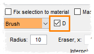

Did you know...
- Select couple or more of most frequently used segmentation tools
- Make sure that each of these tools has the D checkbox checked
- Use the D-key shortcut to toggle between these most frequently used segmentation tools
|  |
The 'D' checkbox in the Segmentation panel allows to specify segmentation tools that can be directly accessible using the 'D' key shortcut.
|